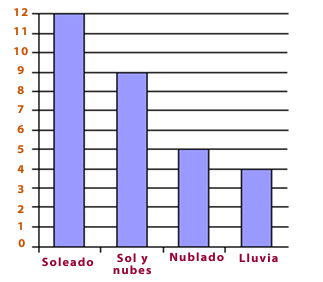

¿Que son las graficas de barras?
Una gráfica de barras es una representación visual que utiliza
barras rectangulares para mostrar la comparación de diferentes
categorías o valores. Cada barra representa una categoría específica
y su altura es proporcional al valor o cantidad que representa.
Se utiliza para visualizar y comparar datos de manera efectiva,
resaltando las diferencias entre las categorías y permitiendo
una fácil interpretación de los resultados.
Imagen De Una Grafica De Barras:

Desarrollador: Handry Serrano Fabela